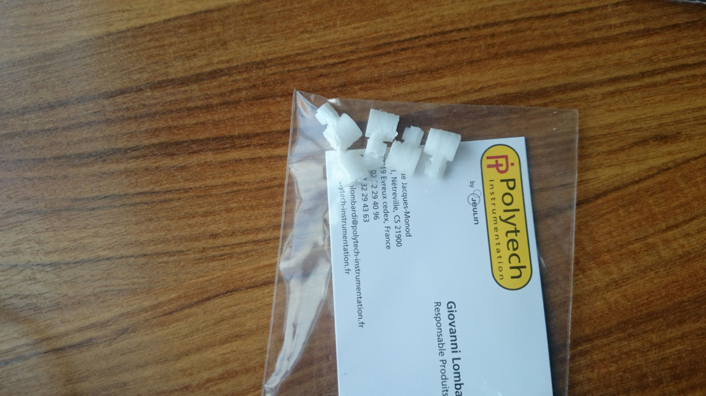

Njord Project
Build an awesome drone from scratch
Aide extérieure
Maintenant que nous avons toutes les pièces et que les librairies de chaque composants ont été développées il nous faut assembler le tout. Cependant, notre école ne disposant ni d'imprimante 3D ni du matériel nécessaire pour la réalisation d'un circuit imprimé, nous avons dû faire appel à des aides extérieures. Le but de cet article est de présenter ceux qui nous ont aidés et ce que nous en avons obtenu.
Fixations moteurs
Étant donné que nous avons choisi d'utiliser les mêmes moteurs que le Crazyflie, nous sommes plus ou moins contraint d'utiliser le même système de fixation qu'eux. Cette fixation est une petite pièce en plastique, avec une forme pipée. En fait, du circuit imprimé partent quatre branches auxquelles les fixations viendront s'emboîter. Ensuite, les moteurs peuvent à leur tour se loger dans l'autre extrémité de la pièce.

Ces pièces ne sont pas disponibles à l'achat, mais Bitcraze fournit, sur son répertoire GitHub, un fichier modélisant la pièce. Ainsi, il est possible de l'imprimer en 3D. Cependant, comme expliqué plus haut notre école ne disposant pas d'imprimante 3D nous avons dû chercher un moyen de la faire imprimer.
Durant le mois de décembre 2014, notre école a accueilli la compétition annuelle de robotique, Robafis. Lors de cette compétition quelques entreprises sont venues exposer leurs produits (en rapport avec la robotique). Notamment, Polytech (une filiale de Jeulin) qui exposait des imprimantes 3D.

Après discussion, Polytech a acceptée de nous fabriquer gratuitement les pièces dont nous avions besoin. Une semaine plus tard, nous avons reçu une enveloppe de leur part contenant les fameuses fixations.
Toutefois, nous avons eu besoin de retravailler un petit peu les pièces, à l'aide d'une fraiseuse, afin d'élargir un peu les embouchures.
Circuit
Lors d'un ancien article nous vous avions présenté le schéma électrique du montage. À l'aide de Fritzing, il est possible de dessiner le PCB. Ainsi, on peut exporter les fichiers qui serviront à la réalisation du montage. Cependant, comme expliqué plus haut, notre école ne dispose pas du matériel nécessaire. Ainsi, nous nous sommes tournés vers l'ENSEA qui est une école proche de la nôtre, spécialisée dans l'ingénierie électronique.
Avec notre logiciel de modélisation (Fritzing) nous avons alors généré des fichiers gerber et les avons transmis à un membre de l'ENSEA. Quelques jours après il nous a contactés pour nous informer que notre carte était prête.

Étant donné que nous souhaitons fixer les moteurs sur la carte directement, à l'aide des fixations, il nous a fallu la découper afin d'obtenir les branches désirées.

Attention :
Depuis l'article dans lequel nous vous présentions le schéma du drone et ce qui a été finalement réalisé le schéma a été modifié. Le voici ci-dessous :

Vous noterez que le communicateur n'est pas présent sur la carte. Le modèle de ce composant est téléchargeable sur Internet, mais le modèle PCB n'est pas complet. N'ayant pas réussi à l'éditer, nous avons abandonné et nous le rajouterons avec de simples fils.